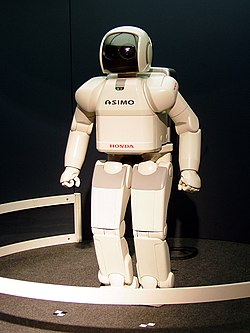
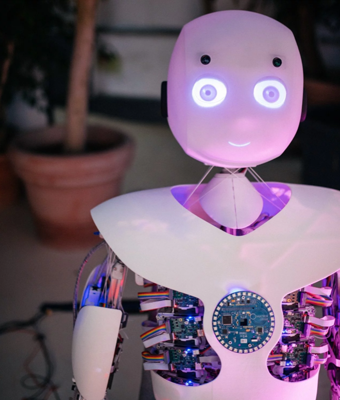

Wprowadzenie do Robotyki
Robotyka, także technika robotyczna – badania nad tworzeniem robotów, w tym sterowanie ich ruchem. Jest ona interdyscyplinarna – łączy zagadnienia inżynierii mechanicznej, elektrotechniki, automatyki i informatyki. Domeną robotyki są również rozważania nad sztuczną inteligencją – w niektórych środowiskach robotyka jest wręcz z nią utożsamiana.
Rodzaje Robotów
Roboty mogą przyjmować różne formy i spełniać różne funkcje. Dzielą się na: roboty przemysłowe, humanoidalne, autonomiczne oraz roboty mobilne. Każdy z tych typów robotów może wykorzystywać różne technologie, w tym sztuczną inteligencję, sensory i systemy sterowania.
Zastosowanie Robotów
Roboty znajdują zastosowanie w wielu dziedzinach, w tym w przemyśle, medycynie, wojsku, a także w codziennym życiu. Przykłady obejmują roboty do montażu w fabrykach, roboty chirurgiczne, a także roboty domowe, jak roboty odkurzające.
Przykłady: Robot Honda ASIMO
ASIMO (Advanced Step in Innovative Mobility) to humanoidalny robot stworzony przez firmę Honda. Jest jednym z najbardziej zaawansowanych robotów tego typu, który potrafi chodzić, biegać, tańczyć, a także rozpoznawać twarze i głosy.
Roboy
"Wizja Roboy jest prosta: budować coraz lepsze roboty, aż będą tak dobre jak ludzkie ciało. Dlatego roboty Roboy naśladują ludzkie ciało za pomocą mięśni i ścięgien, tak jak my. Umożliwia to łagodniejsze ruchy, bezpieczniejsze roboty, a także lepsze zrozumienie tego, jak kontrolujemy nasze ciała. Biorąc ludzkie ciało za wzór, nasze własne istnienie jest dowodem na to, że ostatecznie będziemy w stanie zbudować roboty równie dobre. Musimy tylko dowiedzieć się, jak to zrobić. "
Podsumowanie
- Czym jest robotyka?
Robotyka to interdyscyplinarna dziedzina nauki zajmująca się projektowaniem, budową, programowaniem i zastosowaniem robotów w różnych dziedzinach życia. - Jakie są główne dziedziny robotyki?
Robotyka obejmuje takie dziedziny jak robotyka przemysłowa, medyczna, mobilna oraz edukacyjna. - Jakie są zastosowania robotyki w codziennym życiu?
Roboty znajdują zastosowanie w domu, np. w postaci robotów sprzątających, a także w zaawansowanych systemach asystentów głosowych - Jaka jest przyszłość robotyki?
Przyszłość robotyki wiąże się z rozwojem sztucznej inteligencji, automatyzacji oraz coraz bardziej autonomicznymi systemami. - Jakie są podstawy robotyki?
Podstawy robotyki to percepcja, kontrola i ruch – wszystkie kluczowe do działania robotów w różnych środowiskach.